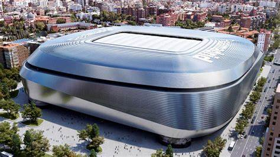
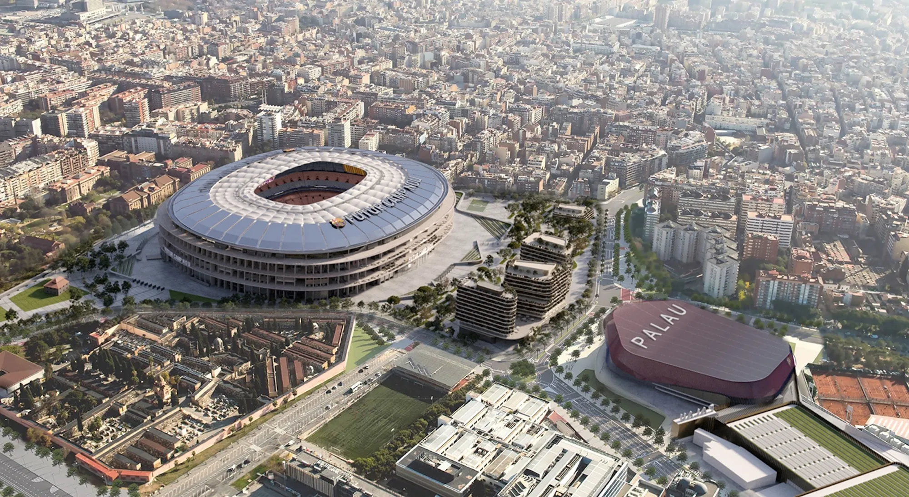

Santiago Bernabéu
The Estadio Santiago Bernabéu, located in Madrid, is the home of Real Madrid. With a capacity of 81,044, this stadium is currently being modernized to include a retractable roof, a 360-degree screen and commercial spaces. Opened in 1947, it has hosted many major events, including the 1982 FIFA World Cup final and several UEFA Champions League finals.

Camp Nou
Camp Nou, located in Barcelona, is one of the most iconic stadiums in the world. With a planned capacity of 105,000 by 2030, it is currently undergoing renovations to incorporate new hospitality areas, a new roof and sustainability initiatives such as green spaces and an autonomous energy system. Opened in 1957, the stadium is also home to the FC Barcelona Museum, the most visited museum in Catalonia.

Riazor
Riazor Stadium, located in La Coruña, is the home of Deportivo La Coruña. With a capacity of 32,912, this stadium was inaugurated in 1944 and has undergone several renovations since then. It is known for its passionate atmosphere and has hosted matches from UEFA Euro 1982.